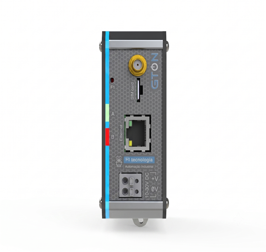

Programação de Formação HI Tecnologia
O GTON-M é um modem industrial da HI Tecnologia que fornece acesso à internet via rede celular 4G LTE CAT-1, permitindo a conectividade de dispositivos remotos de maneira transparente. Nessa etapa, você aprenderá sobre conectividade e comunicação remota em modo geral, utilizando as interfaces Ethernet (E4G) ou Serial (S4G) para estabelecer pontes via socket TCP/IP nos modos cliente ou servidor. Não se esqueça de salvar os arquivos das aulas em pastas individuais para cada tema, na sua pasta localizada em: L:\GAdmn\DSuporte Tecnico\Minha Pasta.

Leia a documentação oficial sobre o GTON M para se familiarizar com as características do equipamento.
Conecte equipamentos G5 no Portal utilizando o GTON M. Assista ao vídeo tutorial para o passo a passo completo.
Conecte o Modsim simulando um equipamento Modbus qualquer no Portal através do GTON M.